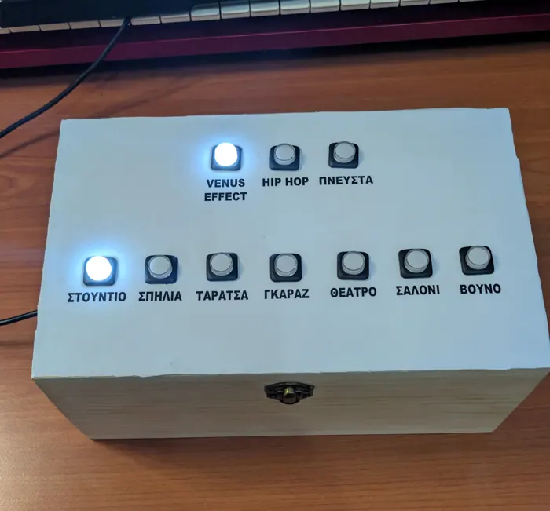
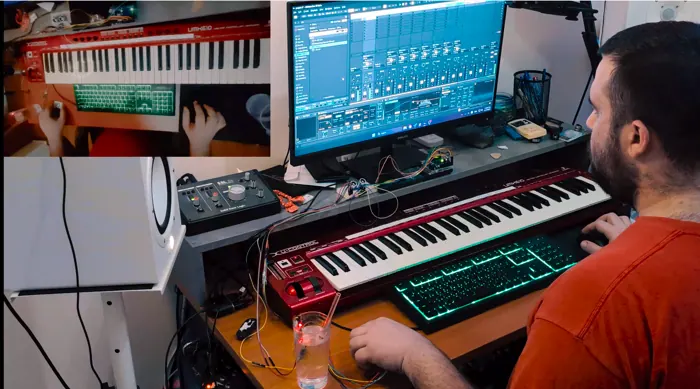
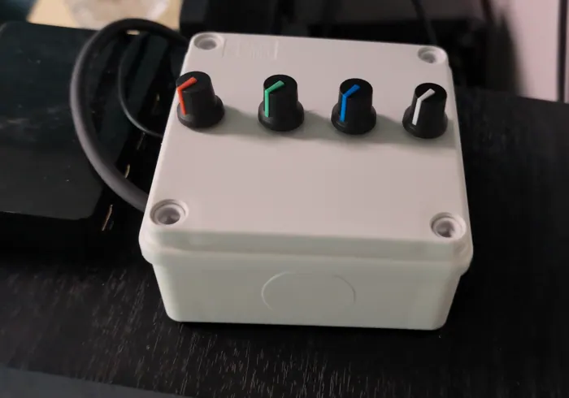
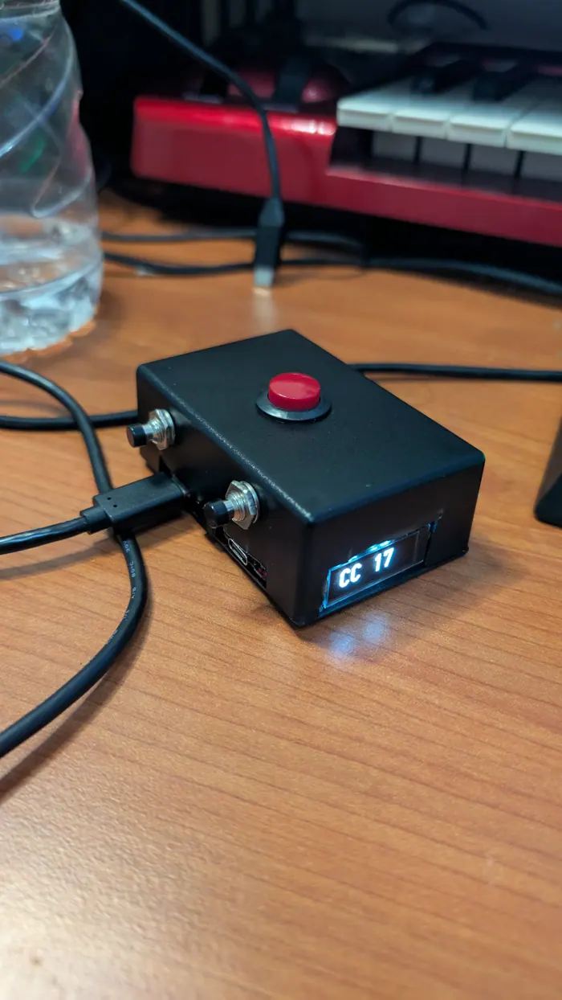
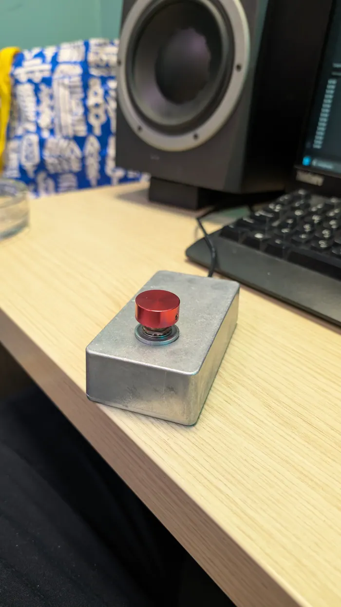

Max4Live, Arduino, plugins
Music Technology
Tools I build for Ableton Live, for the stage and for the mix.

Video Selector Console
A console for switching ensemble and recording room in real time.

Interactive Live Performance System
Arduino sensors that control Ableton through Max MSP.

DMX RGB Controller
A small DMX controller for an LED strip.

Multi-Computer MIDI Button

MIDI Stomp Button
A foot switch for looping in Ableton.